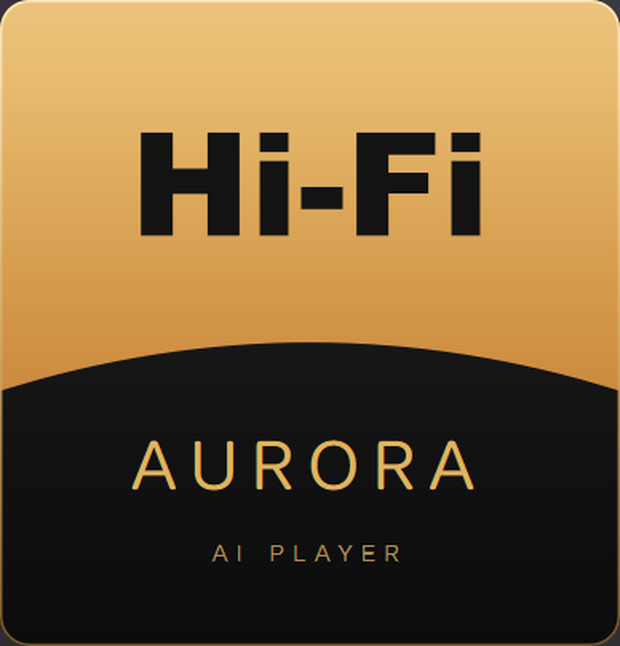

03 / NINE-BAND EQ
调节声音，
也保留自己的选择。
九段自定义均衡器，从 60 Hz 到 16 kHz。每段提供 −12 dB 到 +12 dB 的调节范围，并可恢复平直设置。
截图中的曲线只是示例，不作为推荐音色或效果承诺。
以自己的音乐为中心。整理曲库，探索下一首，再把声音与画面调成喜欢的样子。
Android 目前为交互设计预览，尚无可下载安装包。

原始品牌标志 · 装饰性点阵，非软件截图从辉光面板到细节控制，
看一眼真实的 Windows 开发界面。
真实 Windows 开发界面。频谱 / VU 使用原创合成信号进行静音演示；EQ 为示例设置，不代表真实歌曲播放或听感验收。
透光强度、频谱灯光、氛围颜色、动态方式与面板材质，在同一个设置面板里选择。截图展示暖金与环绕风格。
九段自定义均衡器，从 60 Hz 到 16 kHz。每段提供 −12 dB 到 +12 dB 的调节范围，并可恢复平直设置。
截图中的曲线只是示例，不作为推荐音色或效果承诺。
双声道模拟 VU 表与音色预设集中在侧栏。此画面为原创合成信号的静音演示。
保留点阵频谱与金色 VU 表的熟悉感，重新安排手机上的聆听节奏。右侧设计稿可以直接点开体验。
这里使用 4 首虚构演示歌曲。收藏、导入、全球电台与播放器均为交互模拟，不读取你的文件，也不播放真实音频。预览界面为中文。
Android 安装包 · 即将推出
可点击设计稿 · 所有音频与 AI 效果均为模拟